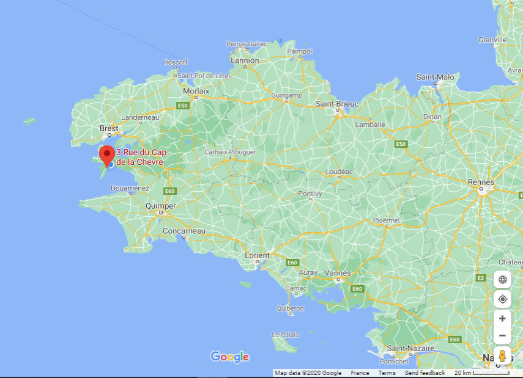
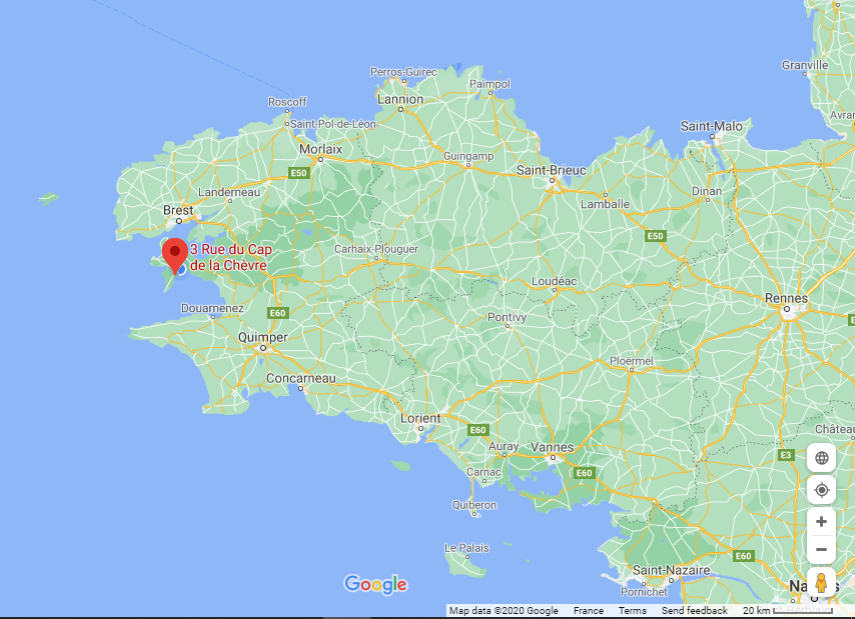

Morgat France
Français

Français
3 rue du Cap de la chèvre, Morgat, 29160 Crozon, Brittany, France


The house is about 30 yards from the excellent sandy beach and has three separate apartments which is ideal if you want to spend your holiday with another family or friends but still want to have your own space. It is built of stone and was professionally renovated to a good standard with central heating, new plumbing, new electrics, double glazing etc.
It is situated in the centre of the village, perfect for the French holiday life. There are several restaurants, crêperies and bars within a short walk.
You can get 10% off Brittany Ferries crossings with code: F4D500
 
